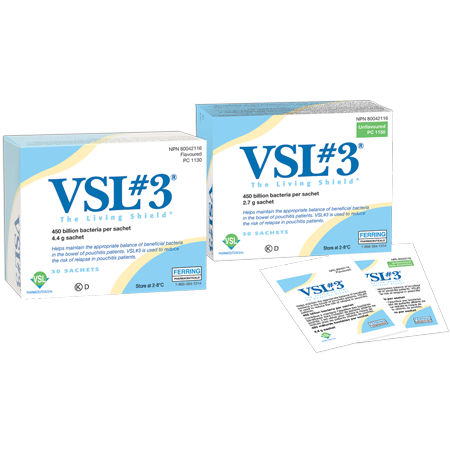

À propos de VSL#3MD
VSL#3MD est un mélange probiotique très puissant comprenant des bactéries lactiques lyophilisées vivantes et des bifidobactéries. Chaque sachet contient 450 milliards de bactéries vivantes dans un rapport défini de 8 différents probiotiques.

le bouclier vivant
Comment il fonctionne
VSL#3MD est un mélange hautement concentré de 8 souches de probiotiques vivants spécialement choisis pour survivre dans le liquide gastrique, la bile et les sécrétions pancréatiques. Les études ont démontré que ces souches probiotiques arrivent vivantes pour coloniser les intestins.
Ceci est important puisque les études ont démontré que la flore peut réduire l'inflammation intestinale, réduire la perméabilité colique et améliorer les jonctions de barrière, ce qui protège le tractus intestinal.
Patients atteints de MICI
Il a été démontré que les patients atteints de MICI présentent un débalancement des « bonnes » et des « mauvaises » bactéries dans leur tractus intestinal. Prendre VSL#3MD augmente la quantité de bonnes bactéries ce qui permet de normaliser l'équilibre entre les « bonnes » et les « mauvaises » bactéries.
Pour l'information complète sur le produit et les ingrédients, veuillez cliquer ici.
Des questions? Appelez le 1.800.263.4057
ou remplissez ce formulaire
Renseignements complets sur le produit | À propos de Ferring | Avis légal | Carte du site | Lettres aux compagnies d'assurance pour remboursement | Pour nous joindre
Nous contacter Ce site Web est uniquement à l'intention des résidents canadiens.
Numéro de produit naturel NPN 80037590
ou remplissez ce formulaire